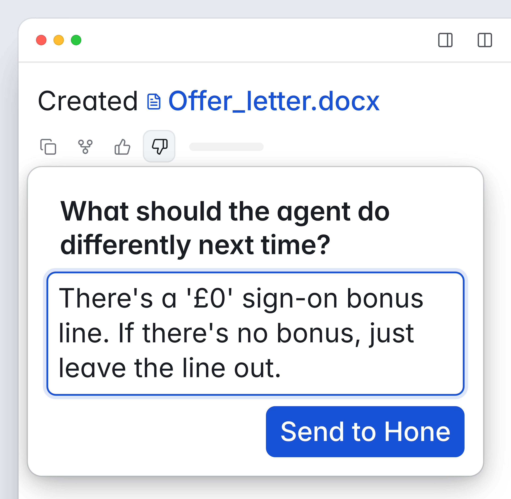
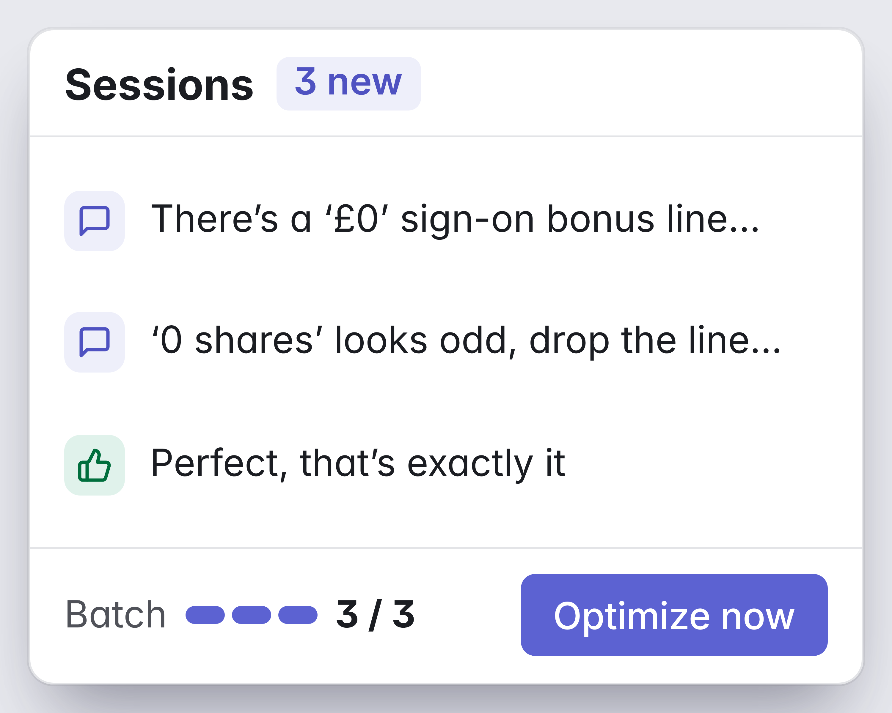
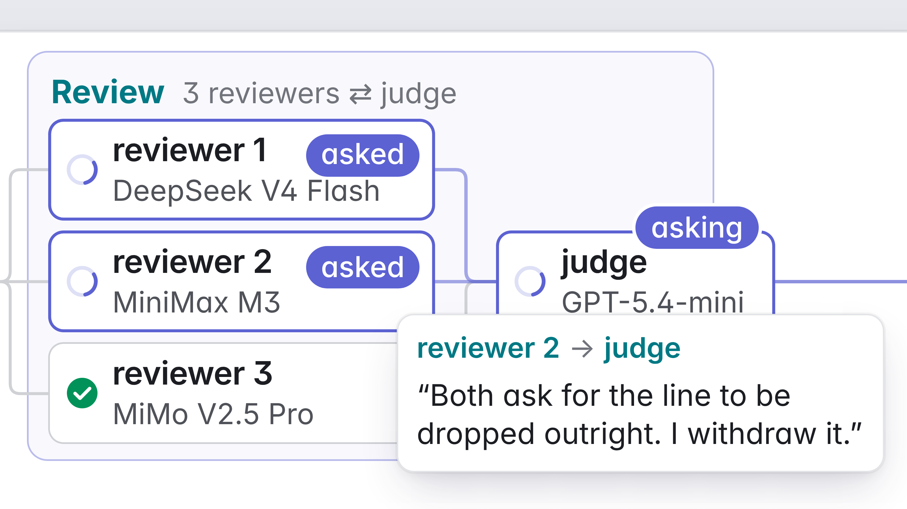
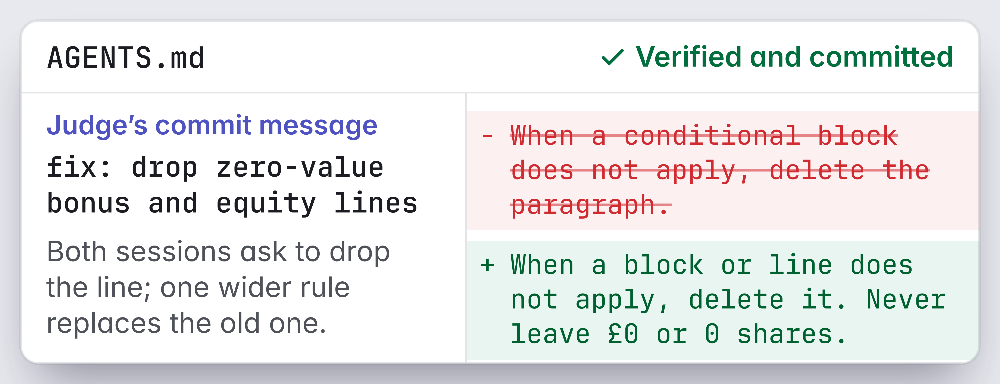
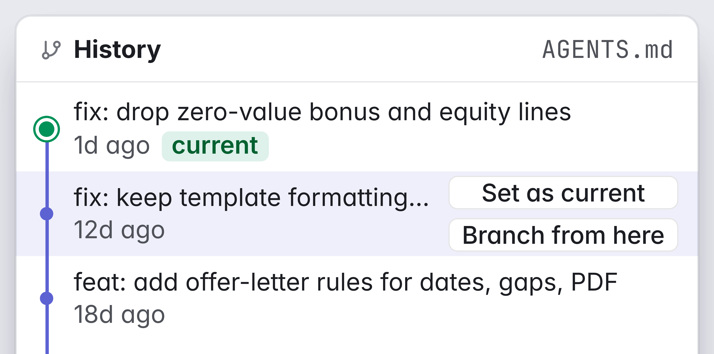

DEMO TRACK
IEEE International Conference on Data Mining
Hone
Mining Agent Trajectories to Optimize
AGENTS.md via Cross-Examination
1AI Talent Hub, ITMO University 2AI Institute, ITMO University, St. Petersburg, Russia
a.lapin@itmo.ru nnikitin@itmo.ru

Code
Can a coding agent learn from sessions that already happened?
AGENTS.md is the instruction file a coding agent reads at session start. Real sessions happen once, with at most a free-text comment.
Skill optimizers learn from runs labeled with a score or pass/fail, and most re-execute tasks to check each edit. Hone needs neither. It edits AGENTS.md from finished sessions, with or without free-text feedback.
| SkillOpt | SkillOpt-Lite | Trace2Skill | EvoSkill | Hone | |
|---|---|---|---|---|---|
| Re-executes tasks | yes | yes | no | yes | no |
| Feedback signal | score | score | pass/fail | score | any text |
1How Hone worksMAJICS, Multi-Agent Judgment through Interactive Cross-examination and Synthesis
1Trace collection. Sessions arrive as traces with optional user feedback.
2Batch assembly. Unanalyzed traces form a batch that stays frozen for the whole run.
3Review. Reviewers on different LLMs analyze the batch, and a judge cross-examines them.
4Propose. Proposers read the review and the experience history. A second judge merges their edits.
5Verify and commit. Each edit needs a unique anchor and batch evidence, or only Propose reruns.
A finding survives only if it repeats across sessions and holds up when the judge questions it.
2What the demo shows





Cross-examination (C). When reviewers name different causes, the judge asks each to answer the other. The goal is a better-grounded consensus than a single-round vote.
Review, then propose. Reviewers diagnose and proposers edit, so no fix comes before the diagnosis.
3Results on two benchmarks
OfficeQA, task success %
SpreadsheetBench, task success %
Hone scored highest on both benchmarks, 3.0 and 11.3 points above the unoptimized Pi agent. Hone edited only the Pi agent's AGENTS.md.
All systems used GPT-5.4-mini as the target model. Hone saw only traces and expected answers. It optimizes one AGENTS.md per domain.